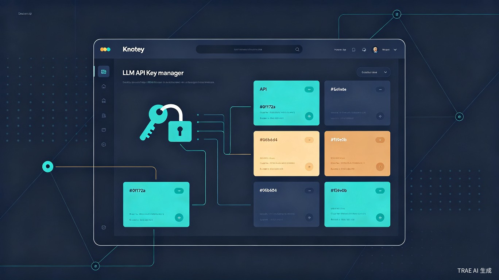

1 创意名称与介绍
想解决什么问题
随着 AI 大模型爆发，开发者和 AI 爱好者往往同时使用 OpenAI、DeepSeek、通义千问、智谱等多个 LLM 平台，每个平台都有不同的 API 地址和 Key。这些凭证散落在聊天记录、笔记、浏览器书签、环境变量文件中，管理混乱，经常出现"找不到 Key"、"搞混了哪个 Key 对应哪个平台"的窘境。
为什么会想到做这个
作为重度 LLM 用户，日常在多个平台间切换，经常需要从各种渠道复制粘贴 API 配置信息。每次都要手动拆分 URL、Key、模型名，再归档到对应平台，流程繁琐且容易出错。TRAE 的出现让我意识到可以用 AI 辅助快速把这个工具做出来——从创意到可运行 Demo，全程在 TRAE Work 中完成。
大概是什么产品
一款本地桌面应用（Electron），核心交互是"粘贴一段文本，自动识别并归档 API Key"，支持 30+ 预置 LLM 平台智能匹配，数据完全本地存储，无需联网。
2 产品界面演示
以下是 Knotey 的核心界面模拟，展示"粘贴识别 → 平台归档 → 一键复制"的完整工作流：
3 核心工作流
用户只需两步即可完成 API Key 的归档：
智能识别引擎
粘贴识别引擎支持多种 Key 前缀格式的自动检测：
- URL 识别：自动匹配 https:// 开头的行，提取 API 端点地址
- Key 识别：支持 sk-、ak_、nvapi-、key-、Bearer、tp-、tvly- 等多种前缀，以及 UUID 格式和长字符串
- 模型识别：支持 gpt-、claude-、gemini-、deepseek-、qwen-、glm-、moonshot-、mistral- 等前缀
- 噪音过滤：自动过滤密码、连接串、命令行语句、纯中文描述等无关内容
- 中文标签解析：支持"URL：xxx"、"Key：xxx"等中文标签格式
4 预置 30+ LLM 平台
内置常见 LLM 平台的域名匹配规则，粘贴时自动识别并归档到对应平台：
5 目标用户及痛点
AI 应用开发者
同时接入多个 LLM API 的全栈/后端开发者，需要高效管理不同环境的 Key 配置。
Prompt 工程师
在不同模型间频繁切换测试 Prompt 效果，需要快速获取对应平台的 Key。
AI 学习者/爱好者
正在学习 AI 技术，注册了多个平台试用，需要一个地方统一管理各种 Key。
技术团队
团队共享多个 LLM 平台的 API 资源，需要统一管理和分发 Key。
使用场景
当你从微信群、文档、网页复制了一段 API 配置信息，只需粘贴到 Knotey，它自动解析出 URL、Key、模型名并归档到对应平台；当你需要在项目中配置某个平台的 Key 时，打开 Knotey 一键复制即可。
当前痛点
- Key 散落在聊天记录、笔记、浏览器书签中，找不到、记不住
- 不同平台 Key 格式各异（sk-、ak_、nvapi- 等），手动整理费时费力
- Key 存在文本文件里容易泄露且不便于检索
- 多人协作时 Key 管理更加混乱，缺乏统一工具
6 价值与意义
效率提升
Knotey 将"复制粘贴 → 手动拆分 → 找平台归类 → 记录"这个原本需要 2-3 分钟的流程，压缩到"粘贴 → 确认"两步，3 秒完成归档。内置 30+ 平台域名智能匹配，自动识别 Key 前缀格式，大幅降低 API Key 管理的认知负担和操作成本。
商业价值
Knotey 填补了 LLM 生态中"API Key 管理"这一细分工具的空白。随着 AI 持续普及，API Key 管理需求只会增长，可作为独立工具或集成到开发者工作流中，未来可扩展为团队协作版、云同步版、浏览器插件等形态。
7 技术架构
架构分层
| 层级 | 技术 | 职责 |
|---|---|---|
| 主进程 | Node.js + better-sqlite3 | 窗口管理、系统托盘、SQLite CRUD、IPC 通信 |
| 预加载脚本 | contextBridge | 类型安全的 IPC 桥接，暴露 window.api |
| 渲染进程 | React + Tailwind CSS | UI 交互、智能识别引擎、数据展示 |
核心特性
- 数据完全本地：SQLite 单文件数据库，WAL 模式保证读写性能
- 系统托盘常驻：关闭窗口自动最小化到托盘，随时唤起
- 单实例锁：防止重复启动
- 窗口位置持久化：记住用户上次使用的窗口大小和位置
- 数据导出：支持导出为 Markdown / 纯文本格式
- 重复检测：添加时自动检测重复 Key 并跳过
8 与传统方式对比
| 维度 | 传统方式（文本文件/笔记） | Knotey |
|---|---|---|
| 归档速度 | 手动拆分 + 录入，2-3 分钟 | 粘贴即识别，3 秒 |
| 平台识别 | 靠记忆判断 | 30+ 平台域名自动匹配 |
| Key 格式识别 | 手动区分 sk-/ak_/nvapi- | 智能识别多种前缀格式 |
| 检索效率 | 全文搜索，噪音多 | 按平台分组，精准定位 |
| 一键复制 | 需要手动选中复制 | 按钮一键复制 Key/URL/组合 |
| 数据安全 | 明文散落各处 | 本地 SQLite 统一管理 |
| 重复检测 | 无 | 自动检测并跳过 |
9 未来规划
Key 脱敏与加密
默认脱敏显示，支持主密码加密存储，提升安全性。
浏览器插件
一键从网页提取 API Key 信息并同步到桌面端。
团队协作版
支持多人共享 Key 池，权限分级管理。
快捷键与深色模式
全局快捷键唤起，深色/浅色主题切换。